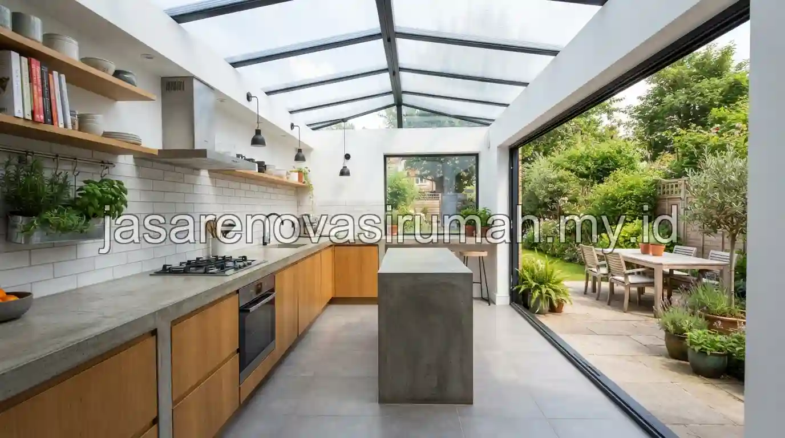

Menghitung estimasi biaya renovasi rumah di Malang dimulai dari merinci setiap komponen pekerjaan, mulai dari bongkar, material, upah tukang, hingga biaya tak terduga, sebelum dijadikan RAB tertulis yang disepakati bersama kontraktor.
Cara ini penting diterapkan agar anggaran yang disiapkan pemilik rumah benar-benar mendekati kondisi riil di lapangan, bukan sekadar perkiraan kasar tanpa rincian jelas.
Bagaimana Langkah Menyusun RAB Renovasi Rumah di Malang?
Langkah pertama dalam menyusun RAB adalah menentukan lingkup pekerjaan secara spesifik, apakah renovasi sebagian seperti dapur dan kamar mandi, atau renovasi total pada seluruh bagian rumah.
Berikut langkah umum menyusun RAB renovasi rumah:
- Tentukan lingkup pekerjaan secara rinci, termasuk area yang akan dibongkar dan dibangun ulang.
- Hitung kebutuhan material utama seperti bata, semen, keramik, dan atap sesuai luas area yang dikerjakan.
- Tambahkan estimasi upah tukang, baik sistem harian maupun borongan sesuai kesepakatan.
- Sisihkan dana cadangan sekitar 10-15 persen dari total anggaran untuk kondisi tak terduga saat pembongkaran.
Penyusunan RAB yang rinci ini sejalan dengan prinsip pada panduan estimasi RAB renovasi rumah yang telah dibahas sebelumnya, meski konteksnya kini diterapkan khusus untuk kondisi renovasi di kawasan Malang.
Bagaimana Contoh Perhitungan Biaya untuk Penambahan Ruang Dapur Belakang?
Contoh perhitungan sederhana untuk penambahan ruang dapur seluas 3x3 meter di lahan belakang rumah bisa dimulai dari menghitung kebutuhan material struktur ringan dan finishing dasar sesuai luas area tersebut.

Simulasi perhitungan kasar untuk penambahan dapur 3x3 meter:
- Luas area tambahan: 9 meter persegi.
- Estimasi biaya konstruksi kelas menengah: sekitar Rp 4.500.000 per meter persegi.
- Perkiraan biaya konstruksi: 9 m2 x Rp 4.500.000 = Rp 40.500.000 sebagai estimasi kasar.
- Tambahkan biaya tak terduga 10 persen: sekitar Rp 4.050.000, sehingga total estimasi sekitar Rp 44.550.000.
Perhitungan ini masih bersifat estimasi awal dan perlu dikonfirmasi lebih lanjut dengan survey lokasi langsung, terutama untuk memastikan kondisi struktur bangunan lama yang akan disambung dengan ruang tambahan baru.
Apa Saja yang Perlu Disiapkan Sebelum RAB Diserahkan ke Kontraktor?
Sebelum RAB diserahkan ke kontraktor, pemilik rumah sebaiknya menyiapkan gambaran denah yang diinginkan, daftar prioritas pekerjaan, serta kisaran anggaran maksimal yang tersedia.
Kejelasan prioritas ini membantu kontraktor memberikan rekomendasi yang lebih tepat sasaran, terutama jika anggaran terbatas dan perlu menentukan mana pekerjaan yang bisa ditunda.
Untuk mendapatkan RAB yang lebih akurat sesuai kondisi rumah Anda di Malang, konsultasikan hasil perhitungan awal ini dengan tim jasa renovasi rumah Malang yang dapat melakukan survey lokasi dan menyusun RAB rinci berdasarkan kondisi bangunan riil, termasuk jika ada kebutuhan tambahan seperti renovasi kamar mandi dalam paket pekerjaan yang sama.

Ainur Reza
Penulis Profesional & Praktisi Konstruksi
Ainur Reza adalah seorang penulis profesional yang memiliki ketertarikan mendalam pada dunia arsitektur dan konstruksi. Dengan pengalaman bertahun-tahun mengamati tren renovasi rumah, ia aktif membagikan panduan praktis, tips RAB, dan wawasan seputar material bangunan untuk membantu pemilik rumah mewujudkan hunian impian mereka dengan anggaran yang efisien.